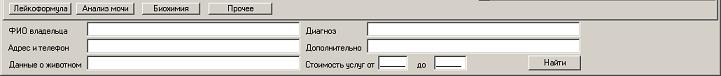

В программе предусмотрен поиск по базе, который включается галочкой Поиск:
После чего внизу открывается панель, в которую можно ввести запрос поиска:
После нажатия на кнопку «Найти» появятся результаты поиска.
Поиск идет в двух журналах параллельно, для просмотра результатов поиска в другом журнале просто переключитесь на него. Для возврата в основной режим работы и отмены поиска просто снимите галочку Поиск.